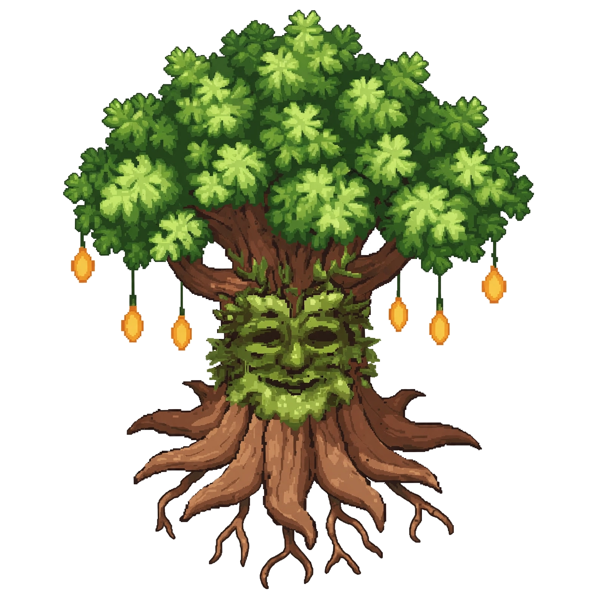
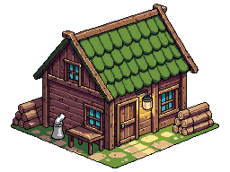
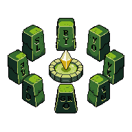
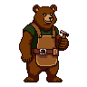
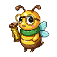
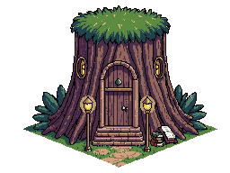
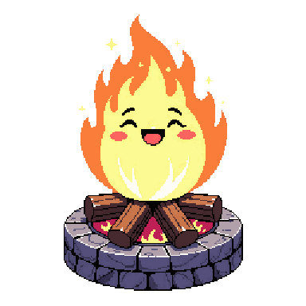
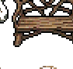

The Forest Root Domain. Grandfather Linkwood at the heart, five waystones on winding trails — walk them all.








Walk my trails, young druid. Each path leads somewhere I cannot go. Return and tell me what you found.
Decks trail opens the real Sylvan Library · Follow Grizzly Gaming
